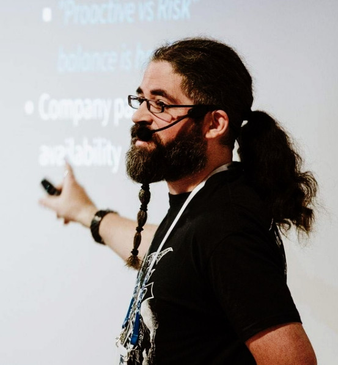

Infrastructure as Code or Infrastructure as Configuration?
Agenda
| Welcome |
| Infra, cloud and applications |
| IaC history |
| Comparing approaches |
| Closure |
Who are you?
- Sr SRE Engineer @ Fastly
- Part time (Devops) lecturer @ La Salle University
- Previously working @ Schibsted, NTT, Oracle…
- Eventual OSS contributions, mostly fixes
- And tcpgoon

Infra, cloud and applications
Cloud is about others managing your infra, right? Why should we care?
And Kubernetes abstracts you from Infra, right?
Positioning infra vs applications
+-----------+ +------------+
|Configured | |Provisioned |
+-----+ +----------+ +-------+ +---------+ | Queue | | Bucket |
|My | |My | | | | | +-----------+ +------------+
|DNS | |configured| | APP | | APP | +------------+
|zones| |LB | | | | | | SQL |
+-----+ +----------+ +-------+ +---------+ | Instance |
+------------+
+---------+ +---------+ +-----------+ +-----------+ +--------------------------+
| | | | | | | | | || || |
| | | | | K8s | | | | || || |
| | | | | clusters | | My VMs | |Managed ||Managed|| |
| Managed | | Managed | | | | clusters | |Queues || DBs ||Object |
| DNS | | LBs | +-----------+ | | | and || (SQL ||Storage|
| | | | | Managed | +-----------+ |Streams || noSQL)|| |
| | | | | K8s | | VM | | || || |
| | | | | API | | templates | | || || |
+---------+ +---------+ +-----------+ +-----------+ +--------------------------+
+---------------------+ +-------------------------+ +--------------------------+
| | | | | |
| Network offering | | Compute offering | | Storage offering |
| | | | | |
+---------------------+ +-------------------------+ +--------------------------+
+------------------------------------------------------------------------------+
| |
| Your cloud (infrastructure) provider |
| |
+------------------------------------------------------------------------------+
So…
Your app is not very useful in isolation…
So your app depends on a specific infra configuration… including kubernetes
And you probably want to use IaC

Fuck, Infra is everywhere
IaC history
The AWS journey
API calls
import boto3
s3 = boto3.client('s3')
bucket_name = 'my-bucket'
s3.create_bucket(bucket_name)
filename = 'file.txt'
s3.upload_file(filename, bucket_name, filename)
Cloudformation
{
"AWSTemplateFormatVersion": "2010-09-09",
"Resources": {
"S3Bucket": {
"Type": "AWS::S3::Bucket"
},
},
"Outputs": {
"S3BucketSecureURL": {
"Value": {
"Fn::Join": [
"",
[
"https://",
{
"Fn::GetAtt": [
"S3Bucket",
"DomainName"
]
}
]
]
},
"Description": "Name of S3 bucket"
}
}
}
Troposphere
from troposphere
import Output, Ref, Template
from troposphere.s3
import Bucket, PublicRead
t = Template()
t.add_description(
"AWS CloudFormation Sample Template”
s3bucket = t.add_resource(Bucket("S3Bucket", AccessControl = PublicRead, ))
t.add_output(Output(
"BucketName",
Value = Ref(s3bucket),
Description = "Name of S3 bucket to hold website content"
))
print(t.to_json())
Sceptre
$ sceptre create dev/vpc.yaml
dev/vpc - Creating stack dev/vpc
VirtualPrivateCloud AWS::EC2::VPC CREATE_IN_PROGRESS
dev/vpc VirtualPrivateCloud AWS::EC2::VPC CREATE_COMPLETE
dev/vpc sceptre-demo-dev-vpc AWS::CloudFormation::Stack CREATE_COMPLETE
AWS CDK
Amazon Cloud Development Kit
from aws_cdk import (
aws_s3 as s3,
cdk
)
bucket = s3.Bucket(self,
"MyFirstBucket",
versioned=True,
encryption=s3.BucketEncryption.KmsManaged,)
troposphere, but multilanguage?
GCP…
Google deployment manager
resources:
- type: storage.v1.bucket
name: test-bucket
properties:
project: my-project
name: test-bucket-name
Google deployment manager from code
"""Creates a KMS key."""
def GenerateConfig(context):
"""Generates configuration."""
key_ring = {
'name': 'keyRing',
'type': 'gcp-types/cloudkms-v1:projects.locations.keyRings',
'properties': {
'parent': 'projects/' + context.env['project'] + '/locations/' + context.properties['region'],
'keyRingId': context.env['deployment'] + '-key-ring'
}
}
resources = [key_ring]
return { 'resources': resources }
k8s
Manifest example
apiVersion: apps/v1
kind: Deployment
metadata:
name: nginx-deployment
labels:
app: nginx
spec:
replicas: 3
selector:
matchLabels:
app: nginx
template:
metadata:
labels:
app: nginx
spec:
containers:
- name: nginx
image: nginx:1.7.9
ports:
- containerPort: 80

Easily becoming
APPVERSION="$(getAppVersionFromSomewhere)"
kubectl apply -f - <<EOH
apiVersion: apps/v1
kind: Deployment
metadata:
name: nginx-deployment
labels:
app: nginx
spec:
replicas: 3
selector:
matchLabels:
app: nginx
template:
metadata:
labels:
app: nginx
spec:
containers:
- name: nginx
image: nginx:${APPVERSION}
ports:
- containerPort: 80
EOH
Helm
apiVersion: v1
kind: Pod
metadata:
name: {{ template "alpine.fullname" . }}
labels:
app.kubernetes.io/managed-by: {{ .Release.Service }}
app.kubernetes.io/instance: {{ .Release.Name | quote }}
app.kubernetes.io/version: {{ .Chart.AppVersion | quote }}
helm.sh/chart: {{ .Chart.Name }}-{{ .Chart.Version }}
app.kubernetes.io/name: {{ template "alpine.name" . }}
spec:
restartPolicy: {{ .Values.restartPolicy }}
containers:
- name: waiter
image: "{{ .Values.image.repository }}:{{ .Values.image.tag }}"
imagePullPolicy: {{ .Values.image.pullPolicy }}
command: ["/bin/sleep", "9000"]
kustomize
kustomization.yaml:
commonLabels:
env: production
bases:
- ../../base
patches:
- replica_count.yaml
replica_count.yaml:
apiVersion: apps/v1
kind: Deployment
metadata:
name: the-deployment
spec:
replicas: 100
Kapitan
local kube = import "lib/kube.libjsonnet";
local kap = import "lib/kapitan.libjsonnet";
local inv = kap.inventory();
local namespace = inv.parameters.namespace;
local name = "cod";
local image = inv.parameters[name].image;
local replicas = inv.parameters[name].replicas;
local args = inv.parameters[name].args;
local container = kube.Container(name) {
image: image,
args: args
};
kube.Deployment(name) {
spec+: {
replicas: replicas,
template+: {
spec+: {
containers: [ container ]
}
}
}
}
Multicloud
Terraform(-v11)
provider "aws" {
region = "us-west-2"
}
resource "aws_s3_bucket" "example" {
bucket = "my-test-s3-terraform-bucket"
acl = "private"
versioning {
enabled = true
}
tags {
Name = "my-test-s3-terraform-bucket"
}
}
Terrascript (+Terraform-v12)
from terrascript import Terrascript, provider
from terrascript.aws.r import aws_instance
ts = Terrascript()
# Add a provider (+= syntax)
ts += provider('aws', access_key='ACCESS_KEY_HERE',
secret_key='SECRET_KEY_HERE', region='us-east-1')
# Add an AWS EC2 instance (add() syntax).
inst = ts.add(aws_instance('example', ami='ami-2757f631', instance_type='t2.micro'))
# Print the JSON-style configuration to stdout.
print(ts.dump())
Pulumi
package main
import (
"github.com/pulumi/pulumi-gcp/sdk/go/gcp/storage"
"github.com/pulumi/pulumi/sdk/go/pulumi"
)
func main() {
pulumi.Run(func(ctx *pulumi.Context) error {
// NewBucket already adds a random suffix
bucket, err := storage.NewBucket(ctx, "pulumi-bucket", &storage.BucketArgs{
Location: "EU",
})
if err != nil {
return err
}
ctx.Export("bucketName", bucket.ID())
ctx.Export("websiteUrl", bucket.Url())
return nil
})
}
Comparing approaches
How IaC looks like with…
Terraform 0.11 vs Pulumi 0.17

Ex1: Bucket creation
resource "google_storage_bucket" "terraform-bucket" {
name = "terraform-bucket-${random_id.suffix.dec}"
location = "EU"
website {
main_page_suffix = "index.html"
not_found_page = "404.html"
}
}
bucket, err := storage.NewBucket(ctx, "pulumi-bucket", &storage.BucketArgs{
Location: "EU",
Websites: []map[string]string{
map[string]string{
"main_page_suffix": "index.html",
"not_found_page": "404.html",
},
},
})
Hardcoding provider specific configs…
resource "google_container_cluster" "stackstorm-cluster" {
name = "stackstorm-${var.environment}"
zone = "us-central1-a"
min_master_version = "${data.google_container_engine_versions.central1a.latest_node_version}"
node_version = "${data.google_container_engine_versions.central1a.latest_node_version}"
lifecycle {
ignore_changes = ["node_pool"]
}
node_pool {
name = "default-pool"
}
additional_zones = [
"us-central1-b",
"us-central1-c",
"us-central1-f",
]
}
Code can use helpers!
func getClusterCfg(baseZone string) (*container.ClusterArgs, error) {
allZonesInSameRegion, err := getAllZonesInSameRegionThan(baseZone)
if err != nil {
return nil, err
}
return &container.ClusterArgs{
AdditionalZones: removeZone(allZonesInSameRegion, baseZone),
InitialNodeCount: initialNodeCountPerZone,
RemoveDefaultNodePool: true,
}, nil
}
Control statements
And some data manipulation:
resource "aws_instance" "example" {
count = 2
ami = "ami-2d39803a"
instance_type = "t2.micro"
availability_zone = "${element(compact(split(",", replace(join(",",var.azs), "eu-west-1b", ""))), count.index)}"
tags {
Name = "example-${count.index}"
}
}
resource "aws_eip" "example" {
count = "${length(aws_instance.example.*.id)}"
instance = "${element(aws_instance.example.*.id, count.index)}"
}
Pulumi

pulumi.Run(func(ctx *pulumi.Context) error {
zones, err := getAllZonesInSameRegionThan("us-central1")
if err != nil {
return err
}
for i, zone := range zones {
if zone == "us-central1-f" {
continue
}
if _, err := compute.NewInstance(ctx, "pulumi-demo-instance-"+zone, getMyInstanceArgs(zone));
err != nil {
return err
}
if _, err = serviceAccount.NewAccount(ctx, "pulumiinstance-sc-"+zone, getMySCArgs(i));
err != nil {
return err
}
}
return nil
})
Pulumi and Docker
const image2 = new docker.Image("build-multistage", {
imageName: ecr2.repositoryUrl,
build: {
context: "./app",
dockerfile: "./app/Dockerfile-multistage",
cacheFrom: { stages: ["build"] },
},
registry: getImageRegistry(ecr2),
});
Pulumi and k8s
labels = { 'app': 'canary-{0}-{1}'.format(get_project(), get_stack()) }
canary = Deployment('canary',
spec={
'selector': { 'matchLabels': labels },
'replicas': 1,
'template': {
'metadata': { 'labels': labels },
'spec': { 'containers': [{ 'name': 'nginx', 'image': 'nginx' }] },
},
}, __opts__=ResourceOptions(provider=k8s_provider)
)
ingress = Service('ingress',
spec={
'type': 'LoadBalancer',
'selector': labels,
'ports': [{'port': 80}],
}, __opts__=ResourceOptions(provider=k8s_provider)
)
So app delivery is also a possibility with pulumi
And there are more advantages of using Code!
- Abstraction of elements
- Reusability via standard programming languages capabilites
- Modules, packages…
- Testing
- Config pre-checks
- Clean code practices
But…

- Pulumi is a quite complex piece of software
- Core daemon + cmd gRPC clients
- … so extending/contributing may be more challenging
- Different programming languages
- In different maturity status
- References between stacks/elements can be tricky
- Stacks state storage limited to filesystem or their platform
While in terraform
- Almost a standard
- 0.12 comes with lots of presents
- loops
- json support
- actual booleans
- Providers for almost everything
- Including Fastly!
So no winners neither losers…

Closure
Final remarks
IaC plays an important role in Cloud apps
k8s does not free you from IaC
There are alternatives to manifests and templating
But probably no perfect solution (yet)